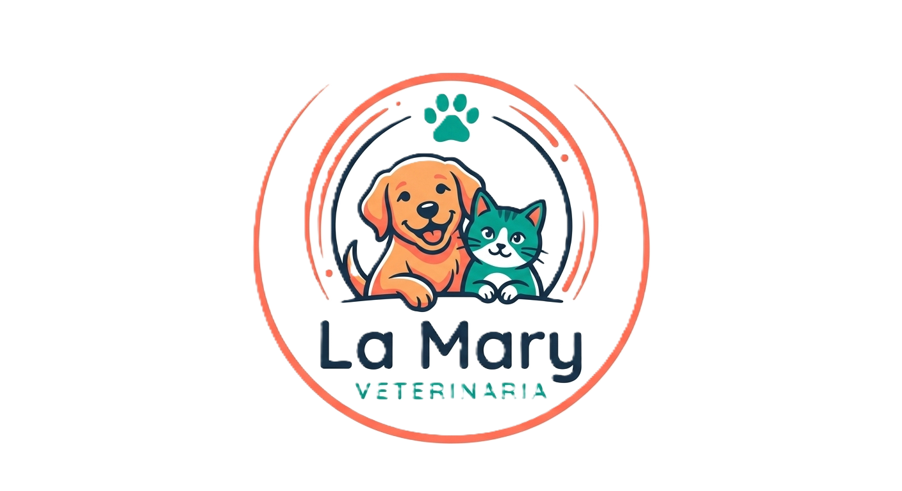
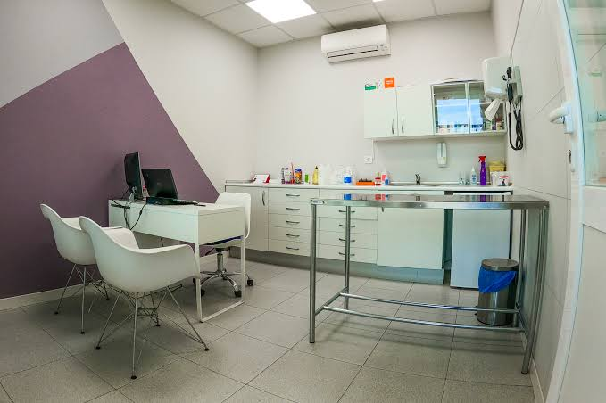
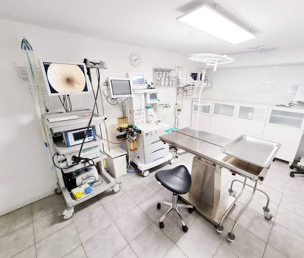
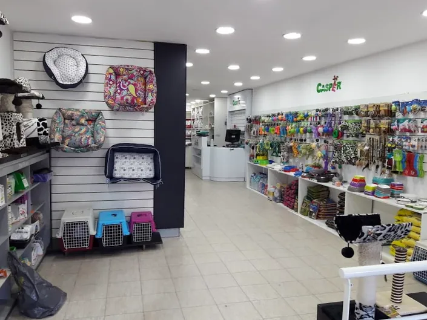

Nuestra Historia
Hace más de 20 años, un grupo de apasionados decidió abrir un espacio dedicado al cuidado y bienestar de las mascotas. Hoy, seguimos comprometidos a brindar servicios de alta calidad y atención personalizada.
¡Bienvenidos a nuestra veterinaria, donde la salud y felicidad de sus mascotas es nuestra prioridad!

¿Por qué elegirnos?
Tecnologías y técnicas de vanguardia para garantizar diagnósticos precisos.
Programas de prevención, vacunación y asesoramiento nutricional.
Colaboración estrecha con refugios para apoyar la adopción local.
Compromiso ético y responsabilidad con la comunidad.
Sala 1
Es el espacio donde recibimos a tu mascota para su consulta. Realizamos chequeos generales, controles de rutina y diagnósticos con equipamiento moderno, en un ambiente tranquilo para que se sienta cómoda desde el primer momento.
Acá empieza su cuidado.

Sala 2
Pensada para tratamientos y procedimientos. Aplicamos vacunas, realizamos desparasitaciones y curaciones, y llevamos a cabo cirugías de rutina con todas las medidas de higiene y seguridad.
Cuidado preciso, con mucho cariño.

Sala de ventas
Acá encontrás todo lo que tu mascota necesita: alimentos balanceados, accesorios, productos de higiene y medicamentos de venta libre. Nuestro equipo te asesora para que elijas lo mejor para cada etapa de su vida.
Todo para su bienestar, en un solo lugar.
